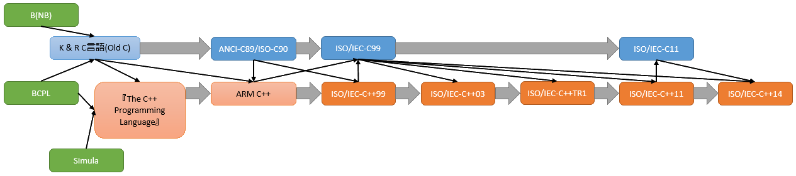

C言語とはUNIXというオペレーティングシステムを開発するために作られた言語だそうです。
初期はUNIXの作者であるKen Tompsonはアセンブラでプログラムを書いていたが、それが嫌になったのか「B」という言語を開発しました。
Brian Kernighan によって改良を加えられ、NewB(NB)を経てC言語へと発展していきました。こうして出来たのが今で言うK&Rです。
こうして出来たC言語はあちこちに広がりましたが、機能があちこちで独自拡張されていきました。
これに収拾をつけるべくANCI(American National Standards Institute)とISO(International Organization for Standardization)は共同でC言語の規格を発表しました。
これが今日C89とかANCI-C89とかISO-C90とか呼ばれるものです(それぞれ1989年と1990年に規格を発行しました)。
さて、話は少し巻き戻り1979年、C with Classesと呼ばれる言語の開発が始まりました。
その名の通り、classを持つC言語で、1983年にはC++という名前に変わり、演算子と関数のオーバーロードや参照、const型、行コメント(//)などが追加されました。
C++はその元となったC言語にも大きな影響を与え、1999年、ISOとIEC(International Electrotechnical Commission)が共同で新たな規格を発行しました。
これが現在最も一般的に使われているC99と呼ばれる規格で、変数宣言位置の自由化やbool型、行コメント、inline関数などC++の機能が逆輸入されました。
なお、C++はC99の登場まで完全な互換性を持っていましたが、現在は異なる言語としてそれぞれ成長を続けています。
C言語ではC11と呼ばれる新規格を発表し、セキュリティ上大問題となっていたgets関数の廃止、_sサフィックス付き関数の追加、マルチスレッド機能、型判定マクロ、Unicode文字列リテラルの対応などをサポートしました。
wordだって、excelだって、ニコニコだって、モンハンだって、エロゲだって、みんなみんなプログラムでできている友達なんだ！
というように、コンピュータで動くありとあらゆるものはプログラムでできています。プログラムを動かすには、我々人間が機械に命令を与える必要があります。命令文をプログラム言語で書くことによって、機械に命令、実行させることができます。
プログラミング言語で書かれたプログラムを読み込んで、それを機械への命令に変換して実行するのですが、その方法は大きく分けて２通りあります。
インタープリタ方式とは、プログラミング言語で書かれたプログラムを読み込んで、直ちにそれを機械への命令に変換して実行してくれます。ある程度まとまってれば、完成してなかったり、適当なこと書いていてもその場で実行して結果を確かめることができるので便利です。主にweb系のプログラムにこれが用いられます。現にこのテキストもhtml,javascriptという言語で書かれているので、この方法が用いられています。この方式のデメリットは、１行１行翻訳して実行してるので実行速度が落ちてしまいます。ですので、動きのある凝ったゲームとか作りたいならこの方式はあまり推奨されないでしょう。
コンパイル方式とは、プログラミング言語で書かれたプログラムを、機械が理解できるデータに変換して、普通はそれをファイルとして保存するということをします。この保存されたファイルの拡張子は.exeだったり。実行の段階では、もう構文解析とか機械語への翻訳は終わっているので、最適な実行速度が得られるわけです。まぁ、バグを取り除く作業（デバッグ作業）はいちいち大変なんですけどね汗 C言語は主にこの方式をとっています。
詳しく知りたい人は参考書で調べるなりgoogle先生なりに聞いてね♡
参考：http://www.geocities.jp/naosacra/mops/forbeginner/2.html
プログラム言語はいっぱいあります。ほんといっぱいあります。
身近な例を挙げてみましょう
たぶん、１年生の皆さんはゲームを作りたいと思うのでこれからゲーム作りに使うであろうライブラリや統合開発環境を紹介しときます。
ライブラリとは、関数がいっぱいあるソースコードのことで、例えばDirectXだと描画や音楽についての関数がいっぱいあります。
これを駆使することにより、根幹のプログラムを自分で作る必要がなく、作品に力を入れることができます。バグも減るし。だいたい全部自分で書くなんてめんdじゃないですか。
IDEとは、プログラムを書くためのエディタ、プログラムをコンパイルするビルドツール、不具合を修正するためのデバッガなどを1つのUIで提供するものです。 IDEは重く、画面を専有するなどの理由でエディタと端末エミュレーターのみで開発する人もいますが、今日では少数派です。
例えば
int a = 10;
printf("a=%d",a);
とすると
a = 10
となりますが
printf("a=%d",a);
int a = 10;
という順番にすると、コンパイラに「printf内のaってなんすか？」って怒られます
関数を宣言するときも同じです。
大事なことなのでもう一度
その他C言語に対する不満から開発が行われた言語がいくつかあります。
デバッグとは、デ(de:取り除く)バッグ(bug:バグを)の意味です。どの時点でバグが起きたのか、今どんな状態なのかを確認することができます。
デプロイとは、プログラムを実際の運用環境に展開することです。
参考サイト
ビルドは何をしている？ [VC++の使い方]
http://www.nitoyon.com/vc/tutorial/project/build_detail.htm
ＶＣ++ Ｔｉｐｓ - About Library
http://www.bb.wakwak.com/~yamaguchi/takashi/Software/VCPP-Tips/AboutLib.html
多くのプログラマーの中での共通認識が有ります。それは
めんd
です。いかに面倒臭がるか、いかに手を抜くか、いかに楽してプログラミングするか、という意味です。 Perlというプログラミング言語を開発したLarry Wallはこんなことを言っています。
"We will encourage you to develop the three great virtues of a programmer: laziness, impatience, and hubris."
訳: 「私達は, 怠惰, 短気, 傲慢という3つの偉大なプログラマの徳をはぐぐむ後押しをします。」
最小の労力で同じ結果を得ましょう。
ここでもその精神を尊重し、「めんどう」と書くのも面倒という「めんd」精神により、省略しました。
そのうち関数の説明で最長不倒関数なんてものもお目にかけることができると思いますが、もうね、本当に頑張ってたくさんコードを書く人がいます。
その昔(昔だといいね)プログラムを、行数(長さ)で評価し、一行○○円なんてこともありました。怒ったプログラマが、プログラムの提出時にそこら辺の財務関係の資料を混ぜてかさ増しすることもあったとか。
業界の闇ですね。
そんなことを、これからプログラミングを学ぼうという人にやってほしくありません。
なぜならば、不可能な物量の仕事を効率化して実現可能にするのがプログラマーの仕事だからです。
というわけで僕から一言。
プログラム 書かなければ バグらない
当たり前のようで忘れがちです。ついつい一から自分で作ろうとしてしまいます。あなたがやろうとしていることは大抵誰かがすでにやっています
biboro(旧称:codegarage)やQiita(キータ)とかgoogleを検索するといいんじゃないかな。
まとめると、可能な限り書くコード量を減らすことが大事ということになります。そのために先ほど言ったライブラリーがあるのです。
コンパイラも一つのプログラムです。決められた規格に従い、書かれたプログラムを適切に変換する作業を行うのがその仕事内容になります。
したがって、コンパイラはエスパーではありません。なのでここはこうだろうと察してはくれません。書いたとおりにしかコンパイルしてくれません。
書いてないことはやってくれない
コード量を減らすことは大事です。でも処理は必ず全部書かなければいけません。
いや、なんでこんなこと書くかというと、ものすごいレアケース・・・というわけでもなく、わりとこういう誤解をする人がいるからです。
可能な限り書くコード量を減らすの意味を取り違えて書かなきゃいけないことも省く馬鹿。
組み込みまで考えだすと数えきれないほどのコンパイラーが存在しますが、有名どこを上げると概ね4つになると思います。